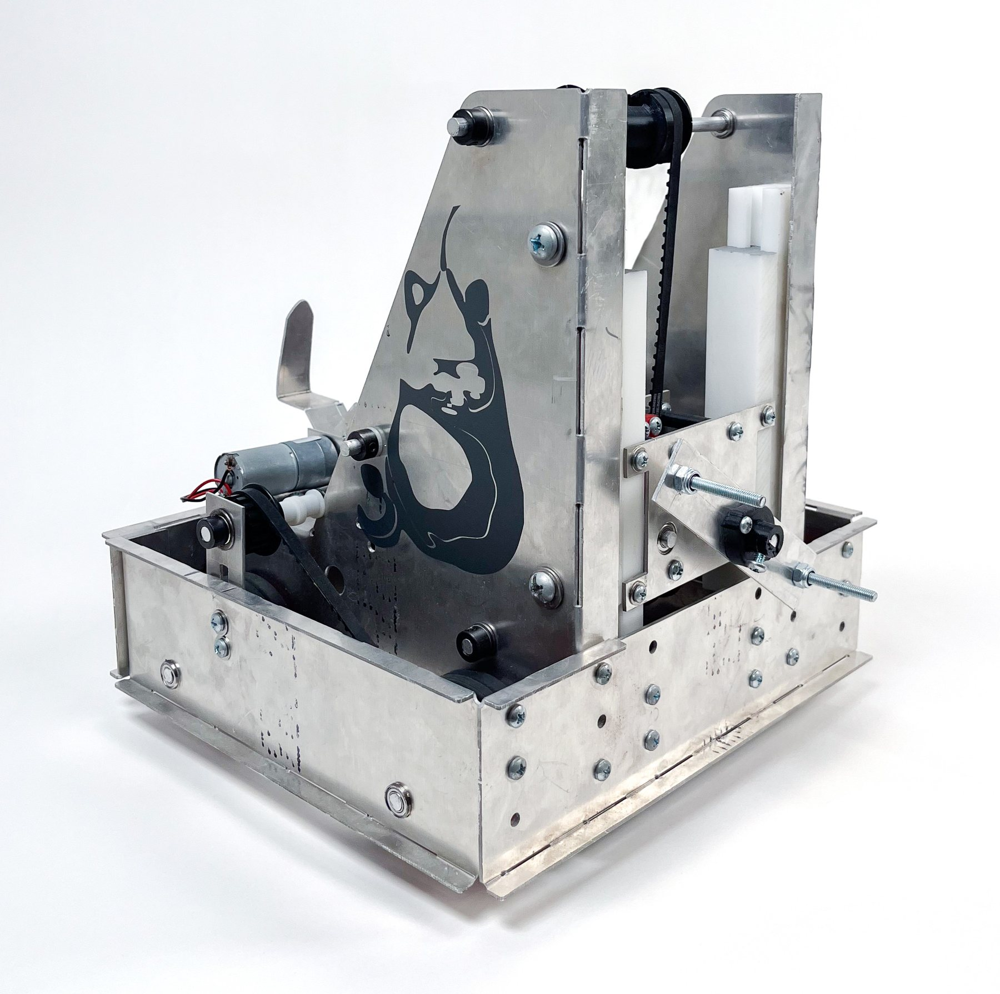

PearCat

Design methodology
Mechanism/machine design
Electromechanical design/robotics
Course2.007: Design and Manufacturing I
Timeline12 weeks, Spring 2025
Tools
SOLIDWORKS
Arduino IDE
Manual Machining
Waterjet cutting
FDM 3D printing
AwardAnimatronic Oz Prize — "most complex/most intricate mechanisms or robots"
PearCat is a competition robot I designed and built for MIT's 2.007: Design and Manufacturing I annual class competition. It scores by spinning gear-driven platforms at two different heights and by hooking and pulling a swiveling point multiplier, using four main mechanisms: a belt-driven lift, a two-motor gear spinner, an all-wheel drivetrain, and an actuated tow hook. PearCat won the class's Animatronic Oz Prize for the most complex and intricate mechanisms.
Context/Motivation
2.007 is built around an annual competition. Each year, the course staff design a themed gameboard full of objectives and obstacles, and every student designs and fabricates a robot to score as many points as possible within a two-minute round and a strict set of build constraints. My year's gameboard was themed after the recently-released movie Wicked.
Problem Framing
Obviously I wanted to score plenty of points, but I also wanted to have lots of fun building my robot. That led me to the gear-driven train platform and the hot air balloon — a chance to explore gears and transmissions — and a strategy analysis added the Oz Head point multiplier. The balloon and train gears sat at different heights and spun in opposite directions, so the spinner needed vertical travel and torque in both directions. Completing Train to Oz during the 30-second autonomous period would double its points, which demanded speed and a hands-free start. On the balloon, I targeted 5.1 lb, the lightest weight in its 1.3× tier, since anything heavier would add torque without adding points.
Process
Autonomous start
Per the rules, each round began with a 30s autonomous period, which was roughly defined as a start and run with hands off the RC manual controls. To trigger the autonomous period, I build a simple photoresistor circuit feeding into one the Arduino's analog pins and coded the appropriate routine to complete the train obstacle and reach Oz. When I flashed the light at the robot, the Arduino detected the spike in light intensity and started the autonmous routine. In competition, the autonomous period ran flawlessly.
Establishing the most critical module
I identified the height-varying gear spinner as my most critical module (MCM). To raise it, I chose a timing-belt lift over lead screws (available ones seemed too slow), scissor lifts (high torque at the start of travel), and four-bar linkages (overkill for travel distance). I first planned slots and pins to constrain the carriage, but worried they wouldn't be stiff enough against pitch reaction forces. After speaking with a lab instructor, I pursued making dovetail rails (thanks Kait!); I milled these from Delrin since its low friction coefficient would reduce friction in sliding, with guidance from shop staff (thanks Scott!). I sized the first gearbox — a 2:1 ratio driven by a Bilda torque servo — from force-meter measurements and motor curves.
Chassis redesign
I attached my MCM to a simple box chassis for my MVP. However -- once assembled -- the MCM was unstable in motion, and the chassis underutilzed the volume within the bounding box which was bad news for the modules I still had to add (also it could stand to look a bit cooler...). I redesigned the chassis with three goals: reduce compliance at the MCM, remove redundant aluminum, and allow for future modules to integrate more cleanly while I was still unsure of their final form. I had the new parts waterjet-cut to minimize misalignment for further stability (thanks Bill!).
Diagnosing the gearbox shortfall
My first full Train to Oz trial failed: the single-motor 2:1 gearbox stalled at the easiest train gear. A quickly mocked-up 3:1 version worked, but took 50–60 s at the lowest torque train gear — far too slow for the autonomous period, and enough to eat the time I needed for other objectives. I dediced to trace it all the way back, finding three oversights in my original sizing:
- I measured force required on the Train to Oz with no load, though the bot itself would be a non-negligible load;
- I assumed a higher voltage than the stock batteries provided -- a lower voltage mean a lower torque-speed curve and therefore underfitting the gear ratio;
- and I automatically assumed the motors would spin fast enough, never verifying the speed needed to finish the obstacle in under 30 seconds.
Speed-running the drivetrain and tow hook
With about three weeks before impound and several modules unbuilt, I chose to finish the robot first and kept these modules simple and fast to fabricate in order to ensure time to iterate on my gearbox. 3D-printed wheel caps doubled as spacers and fasteners. Manually adjustable A-shaped aluminum slides tensioned the drive belts, avoiding cutting and rejoining belts, more complex spring tensioners, or re-cutting the chassis. The tow hook, driven by a 217:1 LDO motor (the highest-torque option) to pull a measured 15 N on the Oz Head, stows to fit the starting box and hooks upward, loading the back wheels to improve traction -- mimicking the pushback tractor principle.
Dual-motor gearbox
To fix the spinner, I increased power in two ways. First, I was able to directly feed power from a 7V LiPo battery to my gearbox, increasing the torque-speed curve. To improve performance even further, I moved to two Bilda Speed motors driving a 3:1 gearbox — about 3.18 N·m and 25 RPM at peak power. Space was the main constraint, since the bounding box had been sized for one motor. I shifted the timing-belt clamps inward and extended their shafts to double as spacers; the belts ran slightly crooked, but the spacers kept them from slipping. When torque at the claw later caused set screws to slip, I filed the output axle into a D-shaft and made a custom adaptor for the claw, finalizing the iterated gearbox design.
Room for Improvement
In competition, PearCat ran its autonomous period flawlessly — then couldn't move its belt drive or tow hook. Different parts of the robot ran on separate batteries, a 4.8 V four-pack and a LiPo, and I -- under nerves -- had only switched on the LiPo. Because of this, PearCat scored decently but didn't advance. The build had an issue with a similar root cause earlier on: under pressure to move quickly, I sized the first gearbox from incomplete assumptions and redesigned the chassis before testing it, spending time on a module that wasn't my riskiest.
Outcome
- Animatronic Oz Prize for most complex/intricate mechanisms
- Flash-triggered autonomous start; autonomous period ran flawlessly in competition
- Train to Oz time: 50–60 s (single motor) → 19–24 s (dual motor) — 2× faster at worst, over 3× at best
- Spinner output: ~3.18 N·m, 25 RPM at peak power
Reflection
Redesigning the chassis before testing the gearbox taught me the value of prioritizing the hard way: now I build and test the riskiest module against its real requirements before building around it. Competition day added a smaller, humbler lesson — a machine is only as reliable as the checklist you run before it starts.